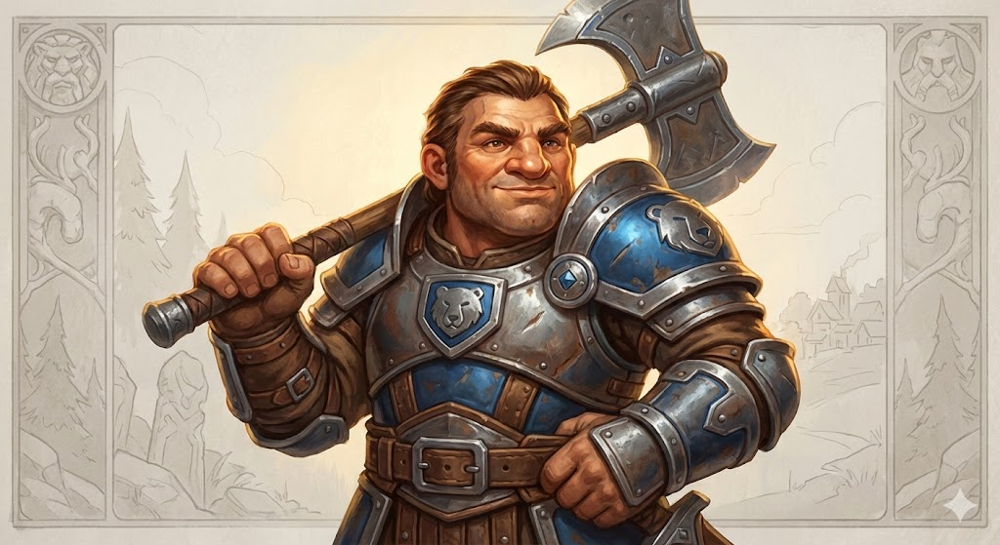
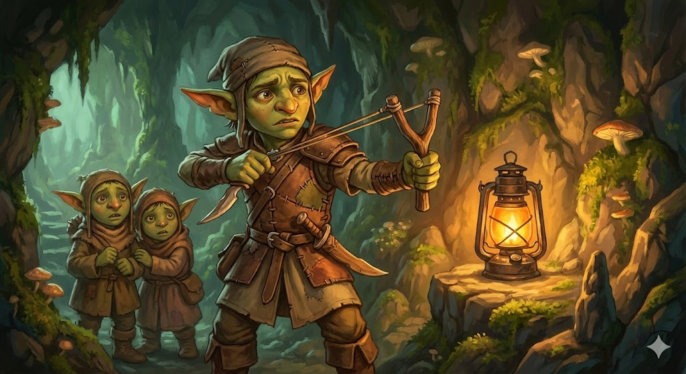
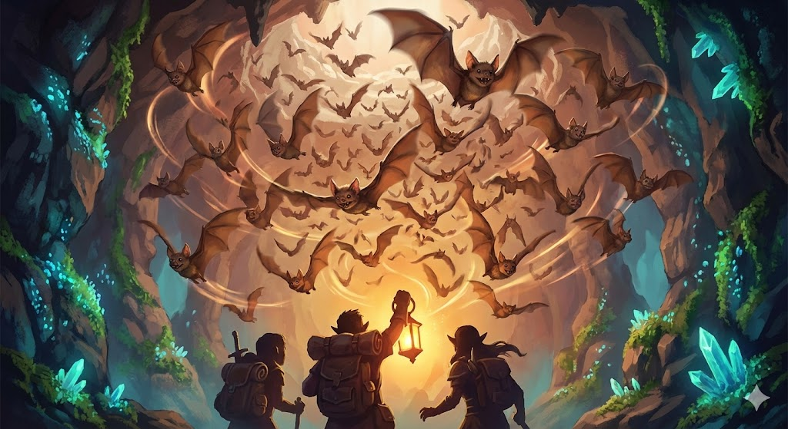
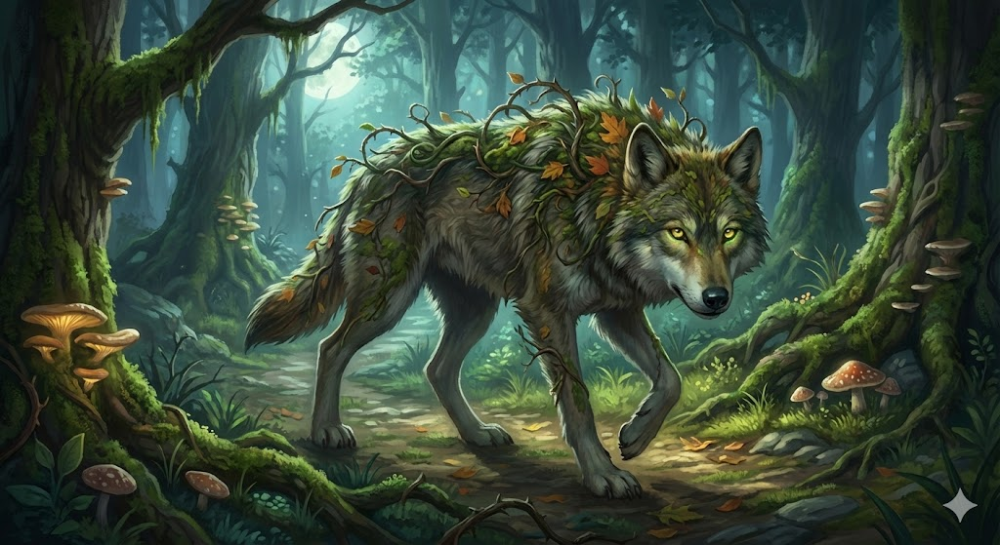
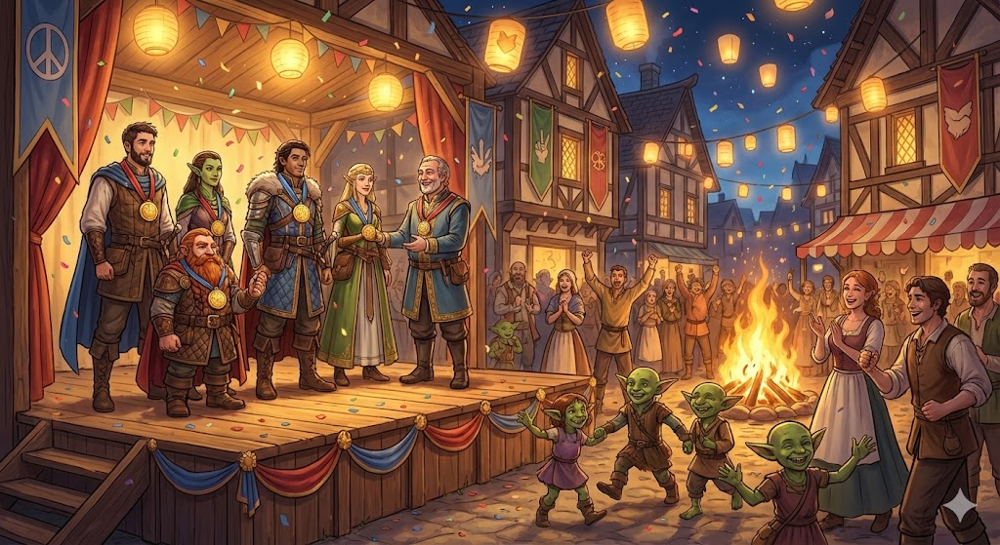

Whispertrail Woods: Tracks, bridge crossing, and playful mystery clues.
Glowmoss Cave: Rune door puzzle and final moral choice.
Festival Return: The town relights lanterns and celebrates teamwork.
Prebuilt Hero Cards
Use these on a device or print character-only packets.

Borin Stonepath
Mountain DwarfFighter (Level 1)Tank / Protector
16AC
14HP
+5Attack
25 ftSpeed
Battleaxe: +5 to hit, 1d8+3 damage.
Throwing Axe: +5 to hit, 1d6+3 damage.
Second Wind: Once per fight, heal 1d10+1 HP.
Backstory: Borin once guarded caravans, but one stormy night he lost supplies meant for Mossbrook families. He stayed in town to make things right, helping rebuild walls and teaching kids to stand brave when things go wrong.
Roleplay line: "No one gets hurt while I am standing."
Creative spotlight: Use Borin to block danger, lift heavy obstacles, and keep tense scenes calm.
Sneak Attack: Extra 1d6 once per turn with ally support.
Backstory: Pip grew up delivering messages between villages and learned to spot clues people miss. Pip secretly maps every hidden path around Mossbrook and dreams of becoming a legendary explorer.
Roleplay line: "Give me ten seconds and I will find the trail."
Backstory: Sera's grandmother was keeper of the old festival lights. After she passed, Sera promised to carry light to people in fear and to solve conflict before swords come out.
Roleplay line: "We can be brave and kind at the same time."
Backstory: Rowan left a strict academy to test magic in real life. Rowan believes knowledge should help regular people and takes notes on every strange rune, creature, and weather pattern.
Roleplay line: "Let me think this through. There is always another way."
Creative spotlight: Use spells for puzzles, crowd control, and unusual solutions.
Character-Based Discussion and Creative Prompts
Character Type
Discussion Prompts (DM asks)
Creative Moves to Encourage
Fighter (Borin)
"Who do you protect first?" "What is your safest plan?"
Use cover, hold doorways, carry teammates or NPCs, shield others.
Rogue (Pip)
"What clue do you notice?" "How can you trick the guard?"
Scout routes, stealth around threats, improvise tools from items.
Cleric (Sera)
"How can we solve this kindly?" "Who needs help now?"
Negotiate peace, heal at key moments, keep team focused.
Wizard (Rowan)
"What is another way to use this spell?" "What do the runes mean?"
Solve puzzles, control the field, create non-combat answers.
Adventure Flow (Read-Aloud Ready)
Scene 1: The Lantern Goes Dark
"Festival ribbons dance in the wind, but the great lantern stand is empty. Mayor Elira turns to you with worried eyes. 'Without that lantern, the whole town will lose heart tonight.'"
Clue loop: blacksmith saw muddy boots, baker heard giggling, stable hand found blue moss.
Discussion point: should the team split up to gather clues faster?
Creative point: players can perform to calm the crowd and gain advantage on next social roll.
Scene 2: Whispertrail Challenge Path
"The trail narrows under whispering trees. Tiny glowing footprints skip across a creek, then vanish near carved arrows in old bark."
Discussion point: who leads each challenge, and why that hero?
Creative point: reward teamwork plans with lower DC or a clue bonus.
Scene 3: Rune Door and Cave Voices
"At the cave mouth, three symbols glow: star, moon, sun. From inside, you hear small voices arguing and one nervous scout whispering, 'Keep the light safe!'"
Puzzle answer: Star -> Moon -> Sun (night to dawn).
Discussion point: are the goblins thieves, or kids in trouble?
Creative point: allow roleplay-first resolution before initiative is rolled.
Scene 4: Final Choice and Festival Ending
"The goblin scout lowers his weapon. 'Our cave is black at night. We only wanted one warm light.' The village lantern glows between both groups as everyone waits for your decision."
Discussion point: what outcome feels most heroic for your character?
Creative point: end with each hero giving one festival speech line.
Encounter Cards

Mudfoot Scout (1)
13AC
11HP
+4Hit
30 ftSpeed
Sling: +4 to hit, 1d4+2 bludgeoning.
Scimitar: +4 to hit, 1d6+2 slashing.
Nimble Escape: Hide or disengage as bonus action.
Description: A nervous cave scout guarding younger goblin kids. Mudfoot is jumpy, loud, and defensive, but not cruel. This encounter works best when it begins as a warning scene and can become a negotiation.
How to run: Start with shouted commands and one warning attack. If players respond with empathy or practical offers, lower aggression and shift to dialogue quickly.
Roleplay cue: \"We are not raiders. We are trying to keep them from the dark.\"

Cave Bat Swarm
12AC
18HP
+3Hit
Fly 30Speed
Bites: +3 to hit, 2d4 piercing.
Distracting Flutter: First attack each round has disadvantage.
Weakness: Loud-sound check DC 12 scatters swarm one round.
Description: A startled cloud of cave bats, drawn by sudden noise or bright movement. This is a pressure encounter, not a boss fight, and it should feel chaotic but survivable.
How to run: Trigger when players force the cave entry or make loud noise. Let creative solutions end it fast: smoke, rhythmic sound, or calm movement.
Roleplay cue: \"A rush of wings explodes from the ceiling and spins around your lanterns.\"

Bramble Wolf (Optional)
13AC
16HP
+4Hit
40 ftSpeed
Bite: +4 to hit, 1d6+2 piercing.
Pack Tactics: Advantage if ally wolf is adjacent.
Tame Option: Animal Handling DC 14 can calm it.
Description: A territorial forest wolf that warns intruders away from its den. Use this when you want a short action beat in the woods without turning the story darker.
How to run: The wolf circles and growls first. Give players a chance to calm it before initiative. Reward patient choices and food offerings.
Roleplay cue: \"The wolf steps sideways, watching your hands, waiting to see if you attack.\"

Festival Reward Card
Hero Medal: Each player gains one reroll token for next session.
Town Gift: Healing potion x1 per hero.
Story Seed: Map fragment points to "The Clocktower Ruins."
Description: This is the emotional payoff card. Present it dramatically at the end so kids feel their choices mattered, especially if they solved the conflict peacefully.
How to run: Have each hero step forward, receive a medal, and say one sentence about what they learned. Keep this short and celebratory.
Follow-up: Open `get-started.html` for session-two roadmap ideas.
DM Quick Reference
Situation
Suggested DC
If They Fail
Simple clue finding or obvious action
10
Give clue anyway, but they lose time.
Risky jump, stealth past guard, puzzle hint
13
Small complication (noise, scratch, separated item).
Heroic stunt, hard social turn, creative spell trick
16
Partial success with consequence instead of dead-end.
Great teamwork and roleplay
Lower by 2
Reward the team for collaboration and story thinking.
Tip: with first-time 11-year-old players, keep turns quick and celebrate creative ideas more than exact rule precision.
Life Guide Tool tabletop page - family game night starter kit with art placeholders and print support.